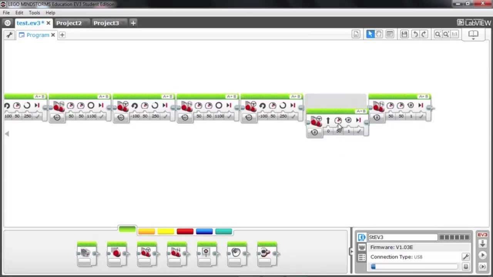

Lego Mindstorm
¿Que es?
Lego Mindstorms es una línea de juguetes de robótica para niños fabricado por la empresa LEGO, que posee elementos básicos de las teorías robóticas, como la unión de piezas y la programación de acciones en forma interactiva. Este robot fue comercializado por primera vez en septiembre de 1998.
Comercialmente se publicita como Robotic Invention System, en español Sistema de Invención Robotizado (RIS). También se vende como herramienta educacional, lo que originalmente se pensó en una colaboración entre LEGO y el MIT. La versión educativa se llama Lego Mindstorms for Schools, en español Lego Mindstorms para la escuela y viene con un software de programación basado en la GUI de Robolab.
Lego Mindstorms puede ser usado para construir un modelo de sistema integrado con partes electromecánicas controladas por computador. Prácticamente todo puede ser representado con las piezas tal como en la vida real, como un elevador o robots industriales.
Hasta 2015 ha habido tres generaciones de Lego Mindstorms: el bloque RCX, el bloque NXT y el EV3.

Trabajo en Clase
Joselito
Nota: Joselito es el nombre clave que le dimos al proyecto.
Utilizando el programa gratuito distribuido por la propia lego, se nos dió la tarea de programar a un robot que se nos fue prestado por el Área de Computacion e Informatica para que pudiese salir de un laberinto utilizando un sensor de luz y cinta de aislar de tres colores. Cada color representaba un giro y acción especifico que servirían al robot para transportarse a través del laberinto.
Dicho programa debia controlar al robot EV3 alias Joselito de la siguiente manera:
- Al detectar color Azul
- Realizar un giro de 90 grados a la izquierda
- Mostrar en la pantalla un texto que diga "Derecha"
- Al detectar colo Negro
- Realizar un giro de 90 grados a la derecha
- Mostrar en la pantalla un texto que diga "derecha"
- Al detectar color rojo
- Detenerse
- Mostrar en la pantalla un texto que diga "FIN"
- Salir del laberinto en el menor tiempo posible
Personalmente, me gustó trabajar con el robot y con mis compañeros Gael y Fausto. Juntos logramos el tiempo más corto de la clase e inclusive participamos en el concurso que se llevó a cabo en la Semana de Ingeniería donde concursamos los mejores tiempos de todas las clases
No fue una tarea fácil programar al robot, ya que debido al desgaste de los motores y a la fricción variable de las superficies; el robot generalmente nunca tomaba la misma ruta y los giros podían variar de una prubea a otra sin necesidad de cambiar el programa.